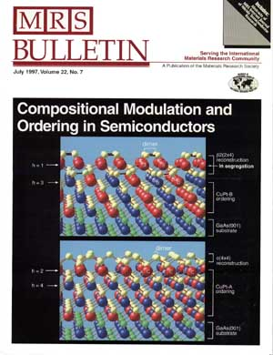

Many III-V AxB1-xC semiconductor alloys exhibit spontaneous CuPt ordering when grown from the vapor phase. The ordered phase consists of alternate cation monolayer planes A_x+h/2B1-x-h/2 and Ax-h/2B1-x+h/2 stacked along the [111] (or equivalent) directions, where 0 < h < 1 is the long range order (LRO) parameter. Spontaneous ordering in semiconductor alloys leads to significant changes in alloy physical properties. Thus, by controlling the ordering parameter h (which depends on growth temperature, growth rates, III/V ratio, substrate misorientation and doping), one can adjust the physical properties of a semiconductor alloy to fit a specific device application.
The Solid State Theory Group at NREL has pioneered the theoretical understanding of ordering induced phenomena in semiconductor alloys. Using first-principles self-consistent electronic structure theory, the researchers at the Theory Group have predicted a serious of changes in material properties of ordered alloy, including (i) new X-ray structure factors that appear at GZB + (1/2,1/2,1/2), where GZB are zinc-blende reciprocal lattice vectors, (ii) a reduction in the band gap Eg, (iii) a valence band splitting DE12 at the valence band maximum (VBM), (iv) an increase of spin-orbit splitting DSO, (v) polarization dependence of optical transition intensities, (vi) enhancement of the degree of spin polarization of photoelectrons emitted from the VBM, (vii) modified NMR chemical shifts, (viii) anisotropy of effective masses, (ix) reduced direct gap pressure deformation potentials, (x) new optical transition of high-energy folded-in states, and (xi) new phonon modes. They provided a general theory for describing these changes as a function of the degree h of LRO, so the predictions can be compared directly to experiments with partially ordered samples.
This figure is taken from the front cover of the July 1997 issue of the MRS Bulletin. These figures show the predicted lowest-energy configurations of a (001) film of Ga0.5In0.5P (Ga = Blue, In = Red, P = Yellow) on a (001) GaAs substrate (As = Green), illustrating the relation between (a) surface reconstruction, (b) surface segregation, and (c) subsurface ordering.
The top figure shows that when the reconstruction is Beta2(2x4), there is an In segregation (under the dimers) and CuPt-B ordering (alternating <111> planes of In and Ga). In the latter case, there is Ga under the dimer (site "A") and In between dimer rows (site "D"). If we swap these Ga and In atoms, a large strain field results, raising the total energy by 0.15 eV/pair. This shows that the CuPt-B arrangement is more stable.
The bottom figure shows that when the reconstruction is c(4x4) with the surface dimers 90 degrees rotated with respect to those of Beta2(2x4), the In segregation disappears and the subsurface ordering is not CuPt-B but rather CuPt-A.
S. B. Zhang (e-mail: szhang@nrel.gov) and Alex Zunger (e-mail: azunger@nrel.gov)
A. Zunger, and S. Mahajan, "Atomic Ordering and Phase Separation in Epitaxial III-V Alloys," in Handbook of Semiconductors, Vol 3, second edition, Elsevier, Amsterdam, pp. 1399-1513 (1994).
G. P. Srivastava, J. L. Martins, and A. Zunger, ``Atomic Structure and Ordering in Semiconductor Alloys'', Phys. Rev. B 31, 2561 (1985).
S. Froyen and A. Zunger, ``Surface-Induced Ordering in GaInP'', Phys. Rev. Lett. 66, 2132 (1991).
S.-H. Wei, D. B. Laks, and A. Zunger, ``Dependence of the Optical Properties of Semiconductor Alloys on the Degree of Long-Range Order'', Appl. Phys. Lett. 62, 1937 (1993).
S. H.-Wei, A. Franceschetti, and A. Zunger, ``E1, E2 and E'0 Transitions in Ordered GaInP, Phys. Rev. B. 51, 13097 (1995).
A. Franceschetti, S. H. Wei and A. Zunger, ``Effects of Ordering on the Electron effective mass and strain deformation potential in GaInP2: deficiencies of the k.p model'', Phys. Rev. B. 52, 13,992 (1995).
A. Zunger, ``Spontaneous Atomic Ordering in Semiconductor Alloys: Causes, Carriers, and Consequences'', MRS Bull. 22, 20 (1997).
V. Ozolins and A. Zunger, ``First-principles Theory of the Evolution of Vibrational Properties with Long-range Order in GaInP2'', Phys. Rev. B 57, R9404 (1998).
S.-H. Wei and A. Zunger, "Fingerprints of CuPt ordering in III-V Semiconductor Alloys: Valence Band Splitting, Band Gap Reduction, and X-Ray Structure Factors," Phys. Rev. B. 57, 8983 (1998).
T. Mattila, L. Bellaiche, L.W. Wang and A. Zunger, "Electronic Structure induced by lateral composition modulation in InGaAs alloys," Appl. Phys. Lett. 72, 2144 (1998).
T. Mattila, S.H. Wei and A. Zunger, "Electronic structure of lateral composition modulation in semiconductor alloys," Phys. Rev. B. 59, 15,270 (1999).
T. Mattila, S.H. Wei and A. Zunger, "Electronic structure of sequence mutations in ordered GaInP2," Physical Review Letters 83, 2010-2013 (1999).
For a listing of all SST references on the topic "Spontaneous Ordering in Semiconductor Alloys", click on the "Get References" button below.